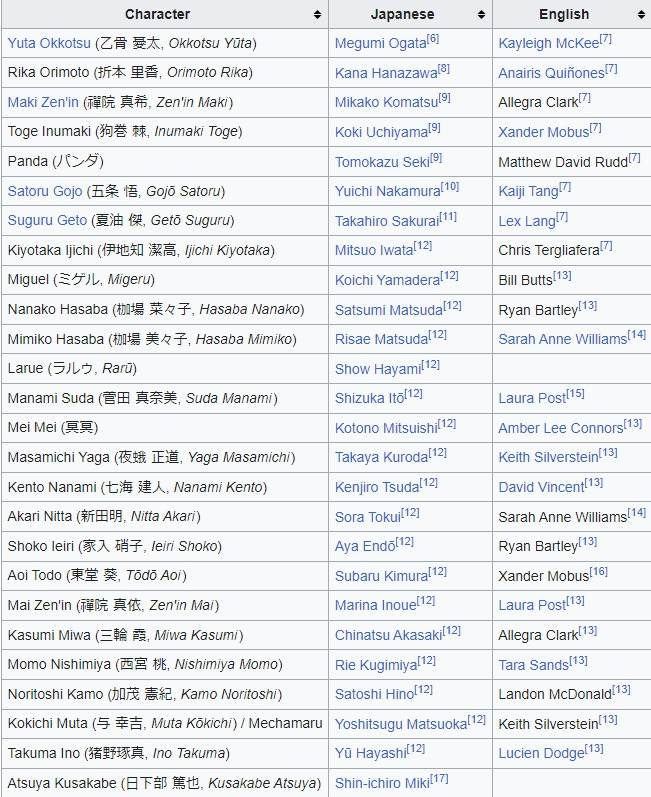
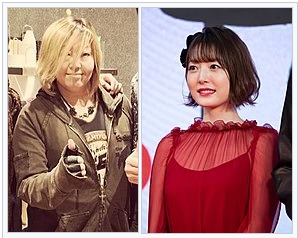

劇場版 呪術廻戦 0
Jujutsu Kaisen 0
Posted 16 March 2024 by 架空のユーザー

Jujutsu Kaisen 0 (Japanese: 劇場版 呪術廻戦 0, Hepburn: Gekijōban Jujutsu Kaisen Zero, "Jujutsu Kaisen 0: The Movie") is a 2021 Japanese animated dark fantasy film.[4] I t is based on the 2017 manga Jujutsu Kaisen 0, which is itself a prequel to the manga series Jujutsu Kaisen, both mangas having been written by Gege Akutami. It was directed by Sunghoo Park from a screenplay by Hiroshi Seko, and stars Megumi Ogata, Kana Hanazawa, Mikako Komatsu, Kōki Uchiyama, Tomokazu Seki, Yuichi Nakamura, and Takahiro Sakurai. The film follows Yuta Okkotsu, a young student who becomes a sorcerer and seeks to control the Cursed Spirit of his childhood friend Rika Orimoto in Jujutsu High, alongside other skilled sorcerers in training.
Originally intended as an arc of the animated television series Jujutsu Kaisen, studio MAPPA changed the format of it during discussion. The staff decided to expand the narrative from that of the original manga by adding new scenes focused on Yuta's mentor Satoru Gojo and the antagonist Suguru Geto. King Gnu performed the two theme songs. Given the large budget for the movie, MAPPA aimed to make more appealing fight sequences than the ones from the animated television series.
Jujutsu Kaisen 0 was released in Japan on December 24, 2021, by Toho. Upon its release, the film received positive reviews for its accessible storytelling, the animated fight sequences, and soundtrack. However, it was also criticized for its short length, as some characters felt underdeveloped when compared to the lead. It was the highest-grossing film at the Japanese box office in 2021, and took $196.2 million worldwide.
Plot
High school student Yuta Okkotsu suffers from being frequently bullied, when one day, his bullies are gravely injured by a Cursed Spirit that clings to him. The higher- ups of the Jujutsu Society wish to have the boy killed, as his curse is a dangerous spirit. However, a teacher at Tokyo Jujutsu Technical High, Satoru Gojo, recruits Yuta to join the school in November 2016, thus saving him. Yuta explains that the Cursed Spirit is Rika, a childhood friend whom he had promised to marry when they grew up. Rika died in a freak accident and became an overprotective spirit that harms anyone who threatens him. Yuta meets fellow students Maki Zen'in, Toge Inumaki, and Panda, all with distinct abilities of their own.
During his first mission with Maki, Yuta successfully summons Rika on his own for the first time to save them from a Cursed Spirit. Three months pass in his school training, and he grows close to Maki, Toge, and Panda. One day, on a mission with Toge, the boys are attacked by a high-level Curse. The man behind the attack was Suguru Geto, a previous student and old friend of Gojo's, who defected from the school and killed over a hundred innocent people on a mission.
Geto attempts to get Yuta on his side so they can make use of Rika, but Yuta refuses when he insults Yuta's friends due to unsettled circumstances. Geto declares war to activate a portal to the under-world: he will release a thousand Curses upon the city to remove non-sorcerer humans, as he believes them to be undeserving and beneath sorcerers. Geto's real reason for the war, however, is to distract Gojo so he can kill Yuta and add Rika to his collection of cursed spirits. Gojo realizes this upon learning of Yuta's background, and sends Inumaki and Panda back to the school to protect Yuta and Maki during the night of Geto's attack. Geto overpowers them all, leaving only Yuta conscious. Enraged at seeing his friends hurt, Yuta promises himself as a sacrifice to Rika in order to strengthen their bond. As a result, Geto is severely wounded. He is found by Gojo, who after reflecting on their past friendship, executes him.
Gojo confirms that Yuta was the one who inadvertently cursed Rika through un-specified ties to royal bloodlines within the hierarchy of Japan's caste system, rather than the other way around, by being unable to accept her death. Yuta broke the curse after promising himself to Rika, and she is able to pass on peacefully after Yuta continues training as a sorcerer within the institution.
In a post-credits scene, Geto's former ally Miguel eats lunch with Yuta in Kenya, and Gojo comes to join them.
Voice Cast
Production
Jujutsu Kaisen 0 is a prequel to the Jujutsu Kaisen television anime by studio MAPPA and based on the manga of the same name by manga artist Gege Akutami. Sunghoo Park originally wanted to protagonist Yuta Okkotsu from the first few episodes of the TV series. However, the idea was scrapped and the anime began, with Yuji Itadori's introduction to the world of sorcerers and curses similar based on the Jujutsu Kaisen manga.[18] In the original format, Park would adapt the series' first three episodes to develop Yuji and then replace him with Okkotsu, but that idea was discarded.[19] Park later felt that telling the Jujutsu Kaisen prequel would fit the movie format more than a television series. Seko commented that, for the movie to fill two hours, he would need to add new material, such as Okkotsu's past and the relationship between Gojo and Geto. Seko said that the action scenes of Akutami's manga are the most important part of that series, he wanted to focus on them in the movie. Park agreed and added elements of Chinese movies to the film, which he wanted fans to look forward to.
With the eventual remake as a film, MAPPA produced the film with director Sunghoo Park, and writer Hiroshi Seko returning from the TV series to work on it. Character designs were handled by Tadashi Hiramatsu.[20][21] The film was announced after the Jujutsu Kaisen anime television series finale in March 2021.[22] While the television series was noted for having entertaining fight scenes, the team wanted to improve them.[19] While not too different from the television series, Park aimed to make the film have its own style, such as the background colors when the sky is shown. Park noted there were multiple challenges in making the animated movie, when compared with his experience with live- actions, due to the amount of animation needed.
Park said that the movie would include new content not featured in the original Jujutsu Kaisen 0 manga.[24] This was mainly because the movie was based on a single manga volume, and the team aimed to make a long film rather than a thirty-minute work. MAPPA CEO Manabu Otsuka said that the team was impressed by the original Jujutsu Kaisen 0 and believed the fans would like to see it adapted. Seko said he had to alter the parts from the original series to make Yuta's character arc more notable. The post-credits scene of the movie is an original scene not present in the manga. Toho had doubts about creating such content until they contacted Akutami who gave them the idea.
Japanese Casting
In casting Megumi Ogata, Gege Akutami envisioned the character as "neutral, soft, and kind, and there is also a big emotional swing and head." Ogata's name was mentioned as an example of an actor close to that, and in response to that, the director Sunghoo Park and the anime staff unanimously decided to cast her. Ogata herself said she would like to cherish the original image as well as create her own image of Yuta.[30] Ogata describes him as an attractive character due to how strong he becomes when interacting with others.[31] Sunghoo Park was also behind the casting of Yuta's voice actor, although Yuta was now a young male voiced by a woman.[32] Ogata surprised Park in the making of the movie by giving Yuta a sensitive characterization in crying.
Kana Hanazawa was cast to voice Rika. She wanted to audition, as she was a fan of the original anime and television series. The story of Rika's childhood left a major impression on Hanazawa, who looked forward to interacting with Ogata.[33] Hanazawa enthusiastically expressed Rika's love for Yuta, and Ogata praised Hanazawa's work.